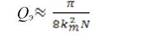
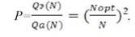
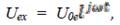
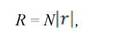
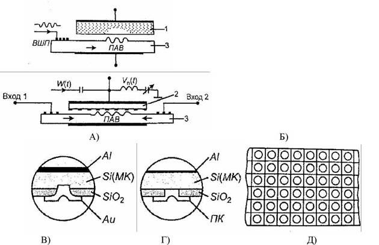

электронный
ресурс по учебной дисциплине 1-58 01 01 - "ИНЖЕНЕРНО-ПСИХОЛОГИЧЕСКОЕ ОБЕСПЕЧЕНИЕ ИНФОРМАЦИОННЫХ ТЕХНОЛОГИЙ"
|
||
| Оглавление | Программа | Теория | Практика| Контроль знаний | Об авторах | ||
Тема 4
Акустоэлектронные приборы и устройства
1. Физические основы функциональной акустоэлектроники.
Физические основы. Функциональная акустоэлектроника является направлением функциональной электроники, в котором исследуются акустоэлектронные эффекты и явления в различных континуальных средах, а также возможность создания приборов и устройств электронной техники для обработки, передачи и хранения информации с использованием динамических неоднородностей акустической и (или) акустоэлектронной, акустооптической природы.
К акустоэлектронным явлениям и эффектам относятся:
- генерация, распространение, преобразование и детектирование объемных (ОАВ) и поверхностных акустических волн (ПАВ);
- преобразование электрического сигнала в акустический и обратно;
- электронное поглощение и усиление акустических волн;
- акустоэлектронные и акустомагнитные эффекты;
- нелинейные акустоэлектронные явления: генерация гармоник,
- акустоэлектронные домены, параметрическое и супергетеродинное усиление звука;
- взаимодействие света и звука в твердых телах, дифракция, модуляция и сканирование света звуком.
Исследования этих явлений и эффектов показывают, что с их помощью возможна генерация динамических неоднородностей волновой и доменной природы, которые широко используются в процессорах сигналов и устройствах памяти для обработки и хранения информации.
2. Динамические неоднородности.
Динамические неоднородности. В функциональной электронике используются динамические неоднородности акустической, акустоэлектронной или акустооптической природы. В твердом теле могут возбуждаться акустические волны, представляющие собой упругое возмущение вследствие деформации материала. Такие деформации имеют место при движении отдельных атомов и сопряжены с изменением расстояний между ними. При этом возникают внутренние упругие силы, стремящиеся вернуть материал в исходное состояние. Колебания атомов происходят вблизи положения равновесия, и при этом генерируется волна механического напряжения и растяжения. Скорость распространения акустической волны лежит в пределах (1,5—4,0)х103 м/с. Диапазон частот акустических волн находится в интервале от нескольких герц до 1013 Гц, а их распространение сопровождается переносом энергии. Различают продольные и сдвиговые волны в зависимости от характера движения частиц (рис. 4.1).
Если размеры звукопровода намного больше длины акустической волны, то в нем могут распространяться объемные акустические волны.
Рисунок 4.1 – Акустические волны продольного (а) и сдвигового (б) типов
Если же среда, в которой распространяются волны, является ограниченной, то на распространение волн существенное влияние оказывают граничные условия. В однородной среде со свободной плоской поверхностью существуют поверхностные акустические волны (ПАВ). По вектору поляризации волн ПАВ бывают двух типов: для вертикальной поляризации характерно расположение вектора колебательного смещения частицы среды в перпендикулярной границе плоскости; для горизонтальной поляризации вектор смещения частицы среды параллелен границе и перпендикулярен направлению распространения волны.
ПАВ являются направленными волнами, другими словами, их амплитуда экспоненциально убывает с глубиной. Поэтому ~90% переносимой энергии сосредоточено в слое глубиной не более одной длины волны. Доступность волнового фронта позволяет эффективно управлять распространением ПАВ на всем протяжении звукопровода. В устройствах на ПАВ используются УЗ-волны в диапазоне от 19 МГц до 10 ГГц.
Простейшим типом ПАВ являются волны с вертикальной поляризацией, распространяющиеся вдоль границы твердого тела с вакуумом. Это так называемые волны Рэлея (рис. 4.2, а). Энергия рэлеевских волн локализована в приповерхностном слое звукопровода
(4.1)
где lS, — длина акустической волны. Волны Рэлея не обладают дисперсией, т. е. скорость их распространения не зависит от частоты.
Вдоль границы двух твердых тел могут распространяться волны Стоунли, состоящие как бы из двух рэлеекских волн.
К волнам с горизонтальной поляризацией относятся волны Лява (рис. 4.2, б). Это сдвиговые волны, существующие в тонком слое на поверхности твердого тела. Волны Лява обладают дисперсией и локализуются в слое, толщина которого dp ³ lS.
Исследованы чисто сдвиговые волны, не обладающие дисперсией (рис. 5.4, в). Эти волны получили название волн Гуляева - Блюштейна. Они могут существовать на свободной поверхности пьезоэлектрических кристаллов. Глубина их проникновения в десятки раз превышает длину акустической волны (dp >> lS). Применение таких волн позволяет избежать тщательной обработки поверхности материала. Важной особенностью распространения динамических неоднородностей акустической природы (ПАВ) в континуальных средах с различными физическими свойствами является существующий эффект генерации динамических неоднородностей другой природы. Вследствие явления акустоэлектронного взаимодействия происходит воздействие акустической волны на электроны проводимости в твердых телах. Результатом такого воздействия является обмен энергией .и импульсом между акустической волной и электронами проводимости. Например, передача энергии акустической волны электронам приводит к электронному поглощению звука, а передача импульса акустической волны стимулирует возникновение электрического тока. Возможно явление усиления звука за счет стимулированного дрейфа электронов в твердом теле и частичной передачи энергии акустической волне.
а – волны Релея; б - волны Лява; в - волны Гуляева – Блюкштейна
Рисунок 4.2 – Поверхностные акустические волны различных типов:
Возникающая при распространении акустической волны деформация вызывает в пьезоматериалах переменное электрическое поле, амплитуда и фаза которого находятся в прямой зависимости от объемного заряда электронов проводимости (прямой пьезоэффект). В свою очередь это поле вызывает деформацию кристалла и соответственно изменение характера распространения волны (обратный пьезоэффект). Акустическая волна генерирует волны электрических полей. В местах, где кристалл сжимается волной, наведенное электрическое поле замедляет движение электронов, а в местах растягивания кристалла волной наблюдается ускорение электронов за счет внутреннего электрического поля. Под действием этих полей носители стремятся сгруппироваться в областях с минимумом потенциальной энергии. Возникают затухающие волны объемного заряда, несколько запаздывающие по отношению к акустической волне (рис. 2.3, а). Волны объемного заряда Если звукопровод поместить в постоянное электрическое поле Е0, то возникает дрейфа электронов со скоростью
(4.2)
где ц — подвижность электронов. В случае, когда Vдр > Vпав (Vпав — фазовая скорость распространения акустической волны), электроны отдают свою энергию ПАВ и амплитуда ПАВ возрастает (рис. 4.3, б). В случае затухания волны график функции достаточно точно, описывается функцией типа
(4.3)
в случае ее усиления
(4.4)
где а и b — константы. Обмен энергией между динамическими неоднородностями акустической и электронной природы в пределах одной континуальной среды является фундаментальным эффектом, лежащим в основе приборов акустоэлектроники.
В акустооптических средах акустические и электромагнитные волны параметрически связаны упругооптическим эффектом. Упругая акустическая волна индуцирует изменение показателя преломления. Это позволяет сформировать динамические неоднородности в виде оптических неоднородностей по показателю преломления (фазовые решетки), распространяющихся вслед за акустической волной. Свет дифрагирует на таких регулярных динамических неоднородностях оптической природы.
а - при отсутствии потенциала; б - при наличии потенциала на звукопроводе
Рисунок 4.3 – Схема взаимодействия динамических неоднородностей акустической и электрической природы:
Акустическая волна в пьезомагнитной среде (антиферромагнетиках) порождает магнитоупругие волны, которые являются еще одним типом динамических неоднородностей в акустоэлектронике.
3. Континуальные среды.
Континуальные среды. Континуальными средами функциональной акустоэлектроники являются твердотельные материалы: пьезоэлектрики, пьезополупроводники, сложные слоистые среды. Выбор континуальных сред определяется природой используемых динамических неоднородностей. Основные требования к этим материалам сводятся к минимизации уровня потерь для распространения динамических неоднородностей акустической или иной природы, а также к максимальной температурной стабильности. Другие требования к среде диктуются функциональным назначением прибора, технологией его производства.
Распространение волны в твердом теле сопряжено с локальной деформацией среды. Для небольших деформаций справедлив закон, связывающий смещение частиц у, и упругие напряжения:
(4.5)
где Tij — симметричный тензор механических напряжений второго ранга Tij = Tij.
В пьезоэлектрических кристаллах тензор механических напряжений и вектор индукций можно описать уравнениями состояния
(4.6)
 (4.7)
(4.7)
где
— тензор деформаций, в котором учтеннелинейный характер связи компонент тензора механических деформаций с производными от смещения; pijk, pijktm — компоненты тензоров линейного и нелинейного пьезоэффектов; eij и eijk — компоненты тензоров линейной и нелинейной диэлектрической проницаемостей; Q ijkt—компонента тензора электрострикции.
Тензор Т имеет четвертый ранг и содержит З4 = 81 элемент. Симметрия тензоров требует, чтобы компоненты были инвариантными относительно индексов i и j или k и l.
Все эти сложные математические соотношения призваны пояснить простую идею: динамические неоднородности акустической природы определенными соотношениями связаны с динамическими неоднородностями электрической природы, и наоборот.
В уравнениях (5.2) и (5.3) первые слагаемые соответствуют линейным составляющим, а остальные члены соответствуют нелинейным составляющим механического напряжения к индукции.
Пьезоэлектрические материалы характеризуются рядом и других коэффициентов и параметров, без учета которых невозможно выбрать континуальную среду для приборов и устройств функциональной акустоэлектроники.
Коэффициент электромеханической связи k2m, определяется величиной
(4.8)
где WS— генерируемая пьезоэлектриком электрическая энергия, WS = WM + Wэ — полная энергия, равная сумме механической энергии деформации WM и электрической Wэ.
Существует точка Кюри Тк, в которой отсутствует спонтанная поляризованность Рх пьезоэлектрика, а величина пьезомодуля определяется соотношением
(4.9)
Добротность среды Q обеспечивает частотную избирательность изделий.
В настоящее время известно более 1500 веществ, обладающих пьезоэлектрическими свойствами. Охарактеризуем только некоторые из них.
Классическими материалами являются пьезоэлектрические монокристаллы. Наиболее широко известный кристалл — кварц, представляющий собой кристаллическую модификацию безводной двуокиси кремния SiO2. Наряду с природными кристаллами используются и синтетические, превосходящие природные по однородности, размерам, а также по стоимости изготовленных из них изделий. Определенные срезы кварца характеризуются своими параметрами и используются в различных устройствах. Кристаллы ниобата лития (LiNbO3) и танталата лития (LiТа O3) обладают более высоким, чем кварц пьезомодулями и коэффициентами электромеханической связи. Во многих областях приборостроения эти кристаллы вытеснили кварц, особенно в СВЧ-технике.
Пьезополупроводники (CdS, ZnS, ZnO) используются для пленочных преобразователей электромагнитных колебаний вплоть до СВЧ-диапазона. Технология их получения довольно хорошо отработана, и можно изготовить пленки с заданной симметрией.
Определенный интерес представляют такие пьезополупроводники, как селениды металлов (CdSe), арсенид галлия (GaAs), антимонид индия (InSb), а также кристаллы иодата лития (LiJO3) и калия (KJO3), германата висмута (Bi2GеО20).
Широкое распространение получили промышленные пьезокерамические материалы, как правило, представляющие собой твердые растворы. Свойства таких материалов задаются путем подбора соотношений компонентов, введением модифицированных добавок, а также технологией их изготовления.
К пьезокерамическим материалам относятся титанат бария (ВаТЮ3), титанат свинца (PbTiO3), ЦТС [Рb(Zr0,53Ti0,47)О3] и др. Добавки, вводимые, например, в ЦТС, расширяют двухфазную область составов и усиливают нужные свойства пьезокерамики. Модификацию пьезокерамики можно осуществить в широком диапазоне свойств за счет введения добавок со скомпенсированной валентностью, другими словами, набора оксидов соответствующего перовскитному соединению.
Следует особо подчеркнуть, что поверхность используемых в акустоэлектронике континуальных сред должна быть тщательно обработана. Это диктуется тем, что звукопровод расположен в приповерхностном слое и тщательная полировка поверхности дозволит снизить рассеяние звука и избежать помех.
Анизотропность кристаллов приводит к резкой зависимости скорости распространения ПАВ от направления среза. Поэтому срезы необходимо выбирать так, чтобы добиться выполнения условия коллинеарности векторов фазовой и групповой скоростей. Континуальные среды могут проявлять нелинейные свойства. Такая ситуация реализуется при достаточно больших смещениях частиц в акустических волнах. В этом случае закон Гука имеет дополнительные компоненты тензора нелинейной упругости. Главным проявлением нелинейности среды является нарушение принципа суперпозиции' волн и, как следствие, появление комбинационных частот колебаний, например (ω1 ± ω 2).
Нелинейность пьезоэлектрических сред порождает еще один эффект. Он связан с тем, что акустическая волна сопровождается волнами зарядовой плотности (электрического поля) и при достаточно больших амплитудах электрических полей тоже возникают нелинейные явления. Этот эффект получил название нелинейный пьезоэффект. В этом случае в уравнении для Тij компонент электрического поля не линеен. Этот эффект сопровождается диэлектрической нелинейностью, связанной с нелинейностью электрической индукцией Di, относительно компонентов электрического поля Еi.
Для получения континуальных сред с заметной нелинейностью подбирают соответствующие параметры, определяемые тензорами высших порядков.
4. Генераторы динамических неоднородностей.
Возбуждение динамических неоднородностей в виде акустической волны в пьезоэлектрике осуществляется с помощью вложенных друг в друга групп электродов, которые получили название встречно-штыревых преобразователей (ВШП).
Другое название такой системы электродов — двухфазный преобразователь ПАВ. Две группы чередующихся электродов соединены шинами, которые в свою очередь подключены к источнику напряжения (рис. 5.4). При подаче на ВШП напряжения каждая пара электродов возбуждает ПАВ. Если период преобразователя (а + b) равен длине ПАВ, возникает явление акустического синхронизма. В этом случае волны, возбуждаемые каждой парой электродов, имеют одинаковую фазу, и происходит когерентное сложение волн.
Суммирование происходит за счет локальных деформаций, образующихся под промежутками между электродами. Образовавшаяся деформация начинает перемещаться в оба направления и достигает следующих промежутков как раз в тот момент, когда полуволна внешнего напряжения достигнет максимума и вызовет деформацию под своими электродами.
Сложение деформаций происходит при выполнении условия
(4.10)
где l, Va , f - соответственно длина, скорость и частота звуковой волны. Такая картина происходит под каждой парой ВШП. Чем больше штырей содержит преобразователь, тем эффективней происходит преобразование электрической энергии в механическую, и наоборот.
Целесообразно ввести топологические и технологические параметры структуры. Коэффициент металлизации определим как
(4.11)
При a=b H=0,5.
а - топология ВШП; б - схема возникновения акустических волн (сечение АА)
Рисунок 4.4 – Возбуждение ПАВ с помощью ВШП
Частота синхронизации или центральная (рабочая) частота, определяемая выражением
(4.12)
где d=2(a+b )—период структуры электродов.
Большое значение имеет топологический параметр W или апертура, определяющая степень перекрытия ВШП. Обычно выбирают значение апертуры W~ 100l. Апертура определяет форму импульсного отклика ВШП. Конструктивно ВШП выполняются в виде тонкопленочных металлических электродов (Аи, А1). Толщина электродов h определяется технологией и обычно h ≤ a.
Коэффициент электромеханической связи k2m является технологическим параметром.
(4.13)
гдеWS— генерируемая пьезоэлектриком электрическая энергия, WS = WM + Wэ — полная энергия, равная сумме механической энергии деформации WM и электрической Wэ.
Генерацией динамических неоднородностей можно эффективно управлять путем изменения характеристик преобразователей ПАВ. Исследовано несколько способов управления генерацией ПАВ.
Первый способ предусматривает управление генерацией ПАВ путем изменения топологии ВШП, включая изменение числа штырей, их расстановку, варьирование функции аподизации или изменения длины отдельных электродов (штырей) или их групп, изменение полярности отдельных штырей или их групп. Устройство с управляемой топологией электродов ВШП предусматривает изменение топологии путем перекоммутации отдельных электродов или их групп относительно общих шин преобразователя. Устройства такого типа обладают достаточно широким диапазоном перестройки характеристик в частотной и временной областях, их параметры приближаются к предельно достижимым. Технологические приемы изменения топологии сводятся к проекционным методам, либо навешиванию дискретных элементов и проволочных межсоединений.
Другой способ управления генерацией ПАВ связан с операцией "взвешивания" электродов преобразователей, которая реализуется за счет изменения количества активных пар ВШП. Это позволяет менять ширину полосы генерации ПАВ и, следовательно, изменять характеристики динамических неоднородностей. На рис. 4.5, а представлена конструкция дискретно-управляемой ВШП, позволяющая получить набор амплитудно-частотных характеристик генерируемых ПАВ с различной шириной пропускания, но одинаковой для всех центральной частотой (рис. 4.5, б). Преобразователь разбит на секции а, b, с с числом штырей 1, 2 и 4, соответственно. Количество каналов К определяется числом секций n и равно
(4.14)
Рисунок 4.5 – Генерация с различными АЧХ (а) и схема коммутации пар ВШП (б)
В схеме коммутации предусмотрены усилители, и обеспечивается контроль выходных параметров за счет применения электронных переключающих схем.
Устройство с управляемым "взвешиванием" электродов представляет собой целенаправленное изменение эффективности преобразования энергии, осуществляемого каждой парой электродов или их группой путем подключения к электродам управляемых импедансных элементов. Это могут быть резистивные, емкостные или индуктивные элементы, а также их комбинации.
Третий способ опирается на управление электрофизическими свойствами подложки под электродами. Мгновенная фаза ПАВ, генерируемая каждой парой ВШП, зависит от знака пьезоэлектрического коэффициента. В свою очередь знак пьезоэлектрического коэффициента может быть изменен переполяризацией в полном соответствии с гистерезисными свойствами материала. Такой прием позволяет управлять процессами генерации ПАВ, создать адаптивные устройства с "памятью". На рис. 4.6, а приведена одна из таких конструкций. Рядом с электродами ВШП 1 размещены электроды переключения поляризации 2, подключенные к источнику поляризующего напряжения Е-< Un < Е+. Эго позволяет менять знак поляризации материала звукопровода между металлическим электродом 3 и электродами 2 одновременно или путем перекоммутации локально под каждой парой ВШП. Варьируя значениями Un и Ubx можно эффективно управлять генерацией ПАВ.
Рисунок 4.6 – Конструкция адаптивного генератора ПАВ (а) и гистерезис пьезоэлектрического звукопровода (б)
Двухфазные преобразователи позволяют генерировать колебания в обе стороны звукопровода "симметрично", другими словами, 50% энергии направо и 50% энергии налево. Однако можно управлять и направлением генерации ПАВ. С этой целью целесообразно использовать многофазные преобразователи, позволяющие синфазно подпитывать волну в заданном направлении (рис. 4.7, а). Фазовое распределение подбирается так, чтобы в обратном направлении условие синфазности не выполнялось. Однако полоса пропускания трехфазного преобразователя определяется протяженностью ВШП и ограничена. Для расширения полосы пропускания и достижения однонаправленности генерации предложен преобразователь бегущей волны (рис. 4.7, б). Каждый из электродов ВШП запитывается от одного из отводов электрической линии задержки. Линия задержки рассчитывается так, что время задержки между соседними отводами равно времени распространения ПАВ между соседними электродами. Это резко несимметричный генератор ПАВ, обеспечивающий строго однонаправленную генерацию.
Рисунок 4.7 – Трехфазный (а) и многофазный (б) генераторы ПАВ
Эффективное управление генерацией осуществляется путем подбора необходимых топологических и технологических параметров.
5. Устройство управления динамическими неоднородностями.
Исследовано насколько способов управления прохождением динамических неоднородностей по тракту передачи информации. Эти процессы определяются типом динамических неоднородностей, функциональным назначением прибора или устройства, Так, если используется только ПАВ, распространение которой происходит в тонком приповерхностном слое, то для эффективного управления можно использовать интерференцию, дифракцию, отражение, преломление, переизлучение, фокусирование волн. Можно варьировать также параметры звукопровода, изменяя такие характеристики процесса распределения, как скорость ПАВ, дисперсию, удельное затухание и т. п.
Наиболее распространенным методом является управление акустическим трактом путем изменения топологии его элементов. Эти элементы позволяют сформировать каналы распространения ПАВ. К таким элементам относится многополосковьй ответвитель (МПО), который конструктивно выполняется в виде системы пленочных металлических электродов, нанесенных на подложку. В зависимости от назначения устройства управления топология МПО имеет различную форму и способна переизлучать энергию в любой из каналов, формировать эти каналы.
При выполнении условия синхронизма l=d МПО ведет себя как отражательная структура, и рабочий диапазон выбирается в пределах 0,4 ¸ 0,9 центральной частоты электродов, необходимых для эффективной перекачки энергии из канала, определяется соотношением:
(4.15)
а общая длина МПО равна
(4.16)
На рис. 4.8 приведены некоторые примеры использования МПО в звуковом канале. С помощью МПО можно переизлучать энергию из одного канала в другой (рис. 4.8, а), раздваивать акустический канал (рис. 4.8, б), разворачивать волновой фронт в обратном направлении (рис. 4.8, в).
а - акустическая связь между двумя независимыми звукопроводами; б - раздвоение канала; в – обращение акустической волны
Рисунок 4.8 - Некоторые операции в тракте, осуществляемые МПО
В качестве элементов акустического тракта можно использовать периодические неоднородности на поверхности звукопровода в виде пазов, выступов металлических или диэлектрических полосок, а также комбинации этих структур.
Разработаны методы локализации (каналирования) волны в топографическом волноводе (рис. 4.9, а, б). Часто это связано с необходимостью увеличения протяженности тракта, чтобы обеспечить максимальное время задержки. Помимо топографических волноводов для локализации акустической волны можно применять и плоские слоистые волноводы (рис. 4.9, в).
Слоистые волноводы изготовляют путем нанесения вещества, скорость ПАВ в которых, отлична от скорости в звукопроводе. Степень локализации волны зависит от соотношения скорости ПАВ в звукопроводе и в слое нанесенного вещества.
Рисунок 4.9 – Акустические волноводы: топографические волноводы треугольной (а) и прямоугольной (б) формы, слоистый волновод с нанесенным звукопроводом (в) и щелевой волновод (г)
Разработаны конструкции МПО с динамически управляемой конфигурацией электродов, в которых под воздействием локального излучения создаются области повышенной проводимости.
Эффективное управление прохождением динамических неоднородностей является изменение граничных условий распространения ПАВ. К граничным условиям будем относить большое число физических параметров, характеризующих среду распространения волн вдоль границы твердого тела, и параметры, отражающие структуру звукопровода. Этот метод управления базируется на локальном изменении свойств среды, что весьма эффективно с энергетической точки зрения. Например, если покрыть поверхность звукопровода тонким слоем селенида кадмия, удельное сопротивление которого зависит от уровня освещенности, то можно менять мнимую часть акустического импеданса. В этом случае появляется возможность изменять амплитуду ПАВ в достаточно широком диапазоне значений.
Однако заметим, что методу управления удельной проводимостью поверхностного слоя присущи недостатки, связанные с большим энергопотреблением, громоздкостью проекционных систем.
Если же использовать магниточувствительные пленки, нанесенные на поверхность звукопровода, то изменять упругие свойства пленки, а также акустический импеданс звукопровода становится проще. Возникающие магнитоупругие поверхностные волны обладают рядом специфических свойств. В частности, их разовая скорость зависит от ориентации вектора управляющего магнитного поля, что позволяет эффективно управлять скоростью распространения в пределах 20%.
Третий метод управления свойствами звукопровода основывается на целенаправленном изменении электрофизических свойств материала звукопровода. Возможность управления свойствами материала может быть реализована за счет термодинамической взаимосвязи тепловых, электрических, магнитных и упругих параметров среды. Управление в этом случае осуществляется с помощью полей различной физической природы.
В некоторых конструкциях приборов используется линейная зависимость между деформацией звукопровода и скоростью распространения ПАВ, Изменение скорости распространения ПАВ также линейно зависит от температуры и аналитически записывается в виде:
(4.17)
Где b — температурный коэффициент расширения, Dt — температурный интервал. Этот метод отличается простотой, отсутствием дополнительных потерь, позволяет эффективно использовать материалы с большим коэффициентом электромеханической связи.
Управление скоростью распространения ПАВ можно осуществлять, используя эффект электроупругого взаимодействия. С этой целью звукопровод помещается в электрическое поле с напряженностью ~ 103 В/см. Однако использование высоковольтного источника напряжения сопряжено с известными трудностями.
Скоростью распространения ПАВ можно также управлять, используя термоупругий эффект. Его применение позволяет изменять упругие константы материала в тепловых полях. Однако большая инерционность тепловых процессов ограничивает использование этого метода управления.
6. Детектирование динамических неоднородностей.
Детектирование динамических неоднородностей является, как правило, физическим процессом, обратным их генерации. Если при генерации ПАВ используется прямой пьезоэффект, позволяющий преобразовывать энергию электрического поля в энергию акустической волны, то в процессе детектирования используется обратный пьезоэффект. Устройство, позволяющее детектировать ПАВ, аналогично генератору ПАВ и представляет собой ВШП.
Одним из способов детектирования является управление топологией электродов. С этой целью можно менять их геометрическую конфигурацию, перекоммутировать отдельные электроды или их группы, формировать латентные электроды и управлять локальным облучением световым или электронным потоком.
Форма импульсного отклика ВШП зависит от закона изменения перекрытия электродов, другими словами, от их частоты и апертуры. На рис. 5.10 представлены формы выходных сигналов, зависящие от топологии детектора, при подаче на вход единичного импульса.
а — эквидистантивный, неаподизированный; б, в — неэквидистантивный; неаподизированный; г — эквидистантивный. аподизированный по закону sinx/x
Рисунок 4.10 – Управление генерацией импульсов топологией ВШП
Если произвести перекоммутацию штырей детектора, то можно управлять выходным сигналом, аналогично уже рассмотренному случаю (рис. 5.5). Детектирование ПАВ можно осуществлять также методом управляемого взвешивания, осуществляемое путем подключения к электродам преобразователя управляемых импедансных элементов любого типа. Такой прием обеспечивает регулируемую амплитудную модуляцию импульсного отклика, а также управление формой амплитудно-частотной и фазово-частотной характеристик.
И наконец, детектирование можно осуществить, управляя электрофизическими свойства ми подложки. В этом случае конструкции выходного ВШП аналогичны входному, а физические процессы детектирования дополнительны (обратим) процессам генерации.
7. Приборы функциональной акустоэлектроники.
Приборы функциональной акустоэлектроники предназначены для преобразования, аналоговой обработки и хранения информации.
С помощью акустоэлектронных приборов и устройств можно производить различные операции с сигналами: задерживать по времени, изменять длительность и форму сигналов по амплитуде, частоте и фазе, преобразовывать частоты и спектр сигналов, сдвигать их по фазе, производить модулирование сигналов, производить кодирование и декодирование сигналов, интегрирование сигналов, получать функции свертки и корреляции сигналов. Устройства, производящие эти операции, отнесены к процессорам сигналов.
Акустоэлектронные устройства позволяют также осуществлять хранение информации. Такие устройства отнесем к запоминающим устройствам.
Схема, отображающая классификацию приборов функциональной акустоэлектроники приведена на рис. 4.11. В этих устройствах используются акустические волны в диапазоне 5x106—2x109 Гц.
Использование приборов и устройств функциональной акустоэлектроники позволяет осуществлять процесс обработки аналоговой и цифровой информации достаточно просто и надежно. При этом удается получить выигрыш в габаритах, массе, энергии и стоимости, что характерно для приборов микроэлектроники.
7.1 Линии задержки.
Простейшим процессором сигналов является линия задержки (ЛЗ), которая предназначена для временной задержки сигналов без заметных их искажений.
Рисунок 4.11 – Классификация устройств функциональной акустоэлектроники
Основным преимуществом ЛЗ на ПАВ являются их небольшие габариты, дост широкий диапазон частот (до 10 Гц), хорошая температурная стабильность (~10-6 °C-1) свойства обусловлены, прежде всего, особенностями ПАВ, а именно невысокой (~105 см/с) скоростью распространения, бездисперсионностью, эффективным преобразованием электрической энергии в акустическую и наоборот. Классификация линий задержки приведена на схеме, представленной на рис. 4.11.
Линии с однократной задержкой сигнала предназначены для однократного или единично го съема информационного сигнала и должны обеспечивать заданную задержку и форму АЧХ-сигнала с максимальной точностью в пределах широкого диапазона температур. Конструктивное решение линии задержки определяется требуемым временем задержки сигнала, а полоса пропускания выбранной топологией ВШП (рис. 5.12, а). Исходя из обобщенной модели изделия функциональной электроники, заметим, что в качестве континуальной среды в ЛЗ чаще используются кварц 7-среза (ST), ниобат лития, германат висмута. Выбор конкретного материала осуществляется на основе энергетического критерия, позволяющего обеспечить минимальные потери, или на основе критерия температурной стабильности параметров.
Генератором динамических неоднородностей в виде ПАВ служит ВШП, как правило, неаподизированный и эквидистантный, Расчет ВШП ПАВ производится исходя из принципа оптимального энергетического согласования в полосе частот. Проще было бы согласование произвести на центральной частоте — частоте акустического синхронизма. Поэтому необходимо обеспечить в акустическом тракте звукопровода равенство электрической и акустической добротностей.
Число электродов ВШП N выбирается исходя из соотношения
(4.18)
Электрическая добротность Qэ определяется коэффициентом электромеханической связи и числом пар штырей ВШП N:
(4.19)
Акустическая добротность Qa тракта определяется как
(4.20)
где а — коэффициент, учитывающий уменьшение полосы пропускания, соответствующей произведению амплитудно-частотных характеристик (АЧХ) входного и выходного ВПШ. Тогда при а » 0,6 + 0,8 величина
(4.21)
Зависимости Q=f(N) и Qa =f(N) приведены на рис. 4.12, б.
Можно выделить три области на графиках. При N<Nopt на частоте акустического синхронизма при Rг = Rn входная и выходная цепи будут согласованы. При этом 50% энергии источника преобразуется в ПАВ. Однако в этой области Qэ>Qa и полоса частот будет урезана. Для увеличения полосы частот акустической цепи необходимо зашунтировать электрический контур, например, увеличив сопротивление генератора Rг. Оптимальным режимом является Qэ=Qa, выполняемое при оптимальном числе пар штырей ВШП
(4.22)
При N>Nopt , ширина полосы пропускания электрической цепи будет больше, чем у акустической. С точки зрения минимизации вносимых потерь такой преобразователь предпочтительней малоэлектродного (N< Nopt). Вводится величина Р, характеризующая степень рассогласования:
(4.23)
а — общий вид; 1 — входной ВШП; 2 — континуальная среда; 3— выходной ВШП; 4 — поглотители ПАВ; L, Rr, r— индуктивность, сопротивление и напряжение генератора входной цепи, соответственно; С, Rh — ёмкость и сопротивление нагрузки выходной цепи; б—зависимость акустической и электрической добротности от числа электродов ВШП; в — импульсный отклик на сигнал 5(т); г — форма радиоимпульса; д — отклик ЛЗ на радиоимпульс
Рисунок 4.12 – Линия с однократной задержкой сигнала:
Шаг электродов d выбирается исходя из заданной центральной частоты
(4.24)
а ширина электродов а, как правило, равна расстоянию между ними b (а= b) и тогда Время задержки сигнала
(4.25)
Минимальное значение апертуры ВШП определяется дифракционными потерями и может быть оценено из соотношения:
(4.26)
Время задержки сигнала
(4.27)
где L — длина звукопровода. Максимальное значение апертуры ограничивается конечной шириной звукопровода.
Переотражение акустической волны между преобразователями вызывает ложный сигнал тройного прохождения. Его задержка по отношению ко времени входного сигнала составляет величину 3t. Этот сигнал искажает АЧХ. При подаче на вход JI3 одиночного импульса, обладающего единичной амплитудой и бесконечно малой длительностью, на выходе возникает акустический сигнал, задержанный на время
(4.28)
Если входной и выходной ВШП одинаковы, то отклик имеет огибающую в форме ромба с общей длительностью, равной сумме длительностей переднего и заднего фронтов. Огибающая заполнена колебаниями частоты f0. Если же на вход ЛЗ подать радиоимпульс, спектр входного сигнала которого уже полосы пропускания ЛЗ (рис. 5.12, г), то на выходе появится сигнал с фронтами 2t0 (рис. 2.12, д). При этом следует иметь в виду, что входной и выходной преобразователи идентичны, а частота заполнения радиоимпульса равна частоте акустического синхронизма ВШП. Задержка в этом случае также определяется соотношением t = L/ Va. На точность воспроизведения задержки влияет, прежде всего, точность изготовления фотошаблонов, ошибки при совмещении и экспонировании, точность ориентации звукопровода. Сказывается и ограниченная термостабильность скорости распространения ПАВ. Линии задержки на ПАВ отличает широкий динамический диапазон Д [дБ ], определяемый выражением:
(4.29)
где Uвх.mах— максимально возможное входное напряжение; Uвых.тin — минимальное напряжение на выходе ЛЗ, обеспечивающее выделение его на фоне шумов, В— вносимые JI3 потери, измеряемые в децибелах. Величина динамического диапазона составляет 80 ¸ 120 дБ.
Многоотводные линии задержки (МЛЗ) предназначены для увеличения максимального времени задержки, увеличения числа дискретных диапазонов задержки, регулировки времени задержки. Максимальную задержку сигналов можно получить, эффективно управляя распространением ПАВ. Увеличивая траекторию распространения ПАВ в пределах одного звукопровода, можно получить заданные параметры. На рис. 4.13 приведены некоторые, конструктивно-технологические решения, связанные с увеличением звукового тракта.
а — матричная конструкция; б — плёночный звукопровод; в — каскадное включение парциальных ЛЗ
Рисунок 4.13 - Многоотводная линия задержки
Матричная конструкция МЛЗ имеет входной ВШП и матрицу выходных, располагающихся по т в n независимых каналах (рис. 4.13, а). Шаг в одном составляет L, дискрет задержки l = L/ п. Другие варианты, например, могут быть связаны с созданием звукового тракта в виде ломаной линии с использованием пьезоэлектрических пленок в качестве континуальной среды (рис. 4.13, б). Рассмотренные конструкции не обеспечивают подавление трехзаходного сигнала и объемных, волн, возникающих между ВШП и тыльной стороной звукопровода. Конструкция каскадного включения парциальных ЛЗ позволяет избежать этих помех (рис.4.13, в). Парциальные ЛЗ выполнены на подложках различной толщины l1 и l2 так, что АЧХ объемно-волновых трактов не совпадают и отсутствует результирующая частота их взаимодействия.
Процесс производства МЛЗ заключается в поиске конструктивных и электрических характеристик звеньев линии задержки.
Дисперсионные линии задержки (ДЛЗ) предназначены для формирования зависимости задержки от частоты сигнала.
В ДЛЗ используется генерирующий ВШП с неэквидистантным расположением штырей. Шаг электродов меняется от
(4.30)
до
(4.31)
где fmin и fmax — нижняя и верхняя частоты девиации ДЛЗ. В отличие от физической дисперсии используется "топологическая" дисперсия. На рис. 5.14, а представлена одна из конструкций ДЛЗ. Генерирующий ВШП несимметричен и неаподизирован, а детектирующий имеет малое число штырей и рассчитан на широкую полосу АЧХ. Дисперсионная характеристика имеет линейный характер (рис. 4.14, б). Основное достоинство ДЛЗ несимметричной конструкции заключается в достаточно простом способе изменения наклона дисперсионной характеристики.
С помощью ДЛЗ можно формировать линейно-частотно-модулированные сигналы (ЛЧМ). Лишенный закон изменения задержки сигнала от частоты может быть обеспечен уменьшением шага электродов ВШП.
Рисунок 4.14 - Дисперсионная линия задержки с "топологической" дисперсией (а) и ее характеристика (б)
Можно также сформировать линейную дисперсионную характеристику, используя топологию с увеличивающимся шагом.
7.2 Устройства частотной селекции.
Устройства частотной селекции представляют собой процессоры, предназначенные для выделения необходимых сигналов на фоне шумов и помех.
К устройствам частотной селекции относятся фильтры, которые можно классифицировать по следующим независимым признакам:
- по виду частотной характеристики: полосовые (пропускающие определенную полосу частот Df), режекторные (подавляющие определенную полосу частот Df), нижних частот (пропускающие частоты от 0 до fe), верхних частот (пропускающие частоты выше fH);
- по физическому принципу: резонансные (по акустическому или электрическому резонансу), трансверсальные (по фазочастотной характеристике), нетрансверсальные (по амплитудно-частотной характеристике);
- по виду обрабатываемых сигналов: аналоговые (обработка сигнала в виде непрерывной функции), цифровые (обработка сигнала в виде дискретной функции).
К устройствам частотной селекции относятся также резонаторы. Резонаторы на объемных акустических волнах были хорошо известны. ПАВ-резонаторы, как правило, самостоятельного значения не имеют, однако широко используются в конструкциях фильтров.
Полосовые фильтры получили наиболее широкое распространение среди элементов частотной селекции на ПАВ Различают сверхузкополосные фильтры (0,01% < Df / f0 < 0,1%), узкополосные (0,1% < Df / f0 <1%) среднеполосные (1 %< Df / f0 <10%), широкополосные (10%< Df / f0 <50%) и сверхширокополосные (50% < Df / f0 < 100%). Полосовые фильтры используются в диапазоне частот от 10 МГц до 2 ГГц. Фильтрация частот в полосовых фильтрах осуществляется за счет селективных свойств ВШП.
Самым простым по конструкции из полосовых фильтров является однопроходной фильтр.
Рассмотрим элементы его конструкций. В качестве континуальной среды используются различные пьезоэлектрические материалы. Генератором динамических неоднородностей в виде ПАВ служит входной ВШП, имеющий многоэлектродную структуру. Амплитудно-частотная характеристика эквидистантного ВЩП (рис. 4.15, а) может быть определена с помощью преобразования Фурье.
Спектр входного сигнала ивхД) может быть представлен в виде суммы бесконечного числа синусоидальных колебаний с непрерывной последовательностью частоты и с бесконечно малыми амплитудами
(4.32)
где dω— бесконечно малый частотный интервал. Функция
(4.33)
представляет собой спектральную плотность амплитуды.
а — конструкция; б — АЧХ фильтра; б — схема формирования трансверсального фильтра; г — суммарная АЧХ трансверсального фильтра
Рисунок 4.15 – Полосовой фильтр:
Если для любой частоты известен коэффициент передачи четырехполюсника
(4.34)
то по амплитуде элементарного воздействия можно найти амплитуду элементарного отклика:
(4.35)
Таким образом, элементарный отклик можно представить в виде:
(4.36)
Полный отклик равен сумме элементарных откликов:
(4.37)
где Ф2(ω) — спектр отклика. Другими словами, спектр отклика равен спектру воздействия, умноженному на коэффициент передачи, или Ф2(ω)=K(jω)Ф1(ω). Величина K(jω) является передаточной функцией.
В исследованной конструкции фильтра входной сигнал представлен в виде импульса с прямоугольной огибающей, заполненной колебаниями с частотой f0. Входной ВШП преобразует входной сигнал. Фурье-спектр этого сигнала может быть аппроксимирован функцией вида
(4.38)
где
(рис. 4.15, б, кривая 1).
Излучаемый ВШП сигнал распространяется в акустическом канале без искажения и поступает на выходной ВШП, который состоит из малого количества штырей и имеет достаточно широкую полосу пропускания (рис. 4.15, б, кривая 2). Полоса пропускания Df такого полосового фильтра определяется входным ВШП и регулируется количеством штырей N. Конструкция фильтра мало чем отличается от ранее рассмотренной линии задержки. Такие конструкции, у которых свойства определяются фазочастотной характеристикой известны как трансверсальные фильтры. Селекция частот в них осуществляется с помощью топологии ВШП. В более сложных конструкциях используются несколько фильтров (линий задержек), сигналы от которых складываются синфазно. Фильтр имеет п линий задержки, отводы от которых характеризуются весовыми коэффициентами ai Сигналы от каждой линии задержки синфазно складываются в сумматоре и формируют сигнал на выходе фильтра (рис.4.15, в). У нетрансверсальных фильтров свойства определяются амплитудно-частотной характеристикой.
Если входной сигнал представлен в виде
, то выходной сигнал с сумматора с помощью преобразования Фурье описывается зависимостью:
(4.39)
где ti — время задержки сигнала в линии. Частотная характеристика фильтра с множеством ЛЗ представлена на рис. 4.15, г и представляет собой сумму функций типа (sinX/X) для большого числа N. Частотная характеристика трансверсального фильтра имеет почти прямоугольную форму.
Следует заметить, что каждую пару электродов ВШП можно интерпретировать как отводы фильтра, шины в качестве сумматора, а весовые коэффициенты аt определяются топологией электродов. Очевидно, что, изменяя топологию электродов, их взаимное перекрытие можно менять значения аi и, соответственно, АЧХ полосового фильтра. Такой метод весовой обработки компонентов сигнала получил название аподизации преобразователя. В принятой модели изделия функциональной электроники аподизированный преобразователь представляет собой устройство управления.
Степень перекрытия электродов при постоянной амплитуде ПАВ изменяет величину фронта волны, что и сказывается на значении весового коэффициента. Различают два основных метода аподизации преобразователей.
Внешнее взвешивание реализуется с помощью внешних шунтов емкостного или резистивного характера, которые позволяют задавать на электродах (рис. 4.16, а) разность потенциалов (рис. 4.16, б), необходимую для формирования ПАВ. Интенсивность электрического поля между соседними электродами ВШП определяется только разностью потенциалов, поскольку апертура постоянна. Интенсивность формируемой ПАВ пропорциональна интенсивности электрического поля. Энергетические характеристики волны отражены на эпюрах. Амплитуда волны пропорциональна напряжению при постоянной апертуре W.

а — общая схема; б—входной сигнал; в — амплитуда откликов элементов ВШП
Рисунок 4.16 - Фильтр с внешним взвешиванием
Детектирование сигнала происходит на выходном ВШП, имеющем любую апертуру, но достаточно широкополосном, позволяющем получить суммарный сигнал от каждого элемента импульсного отклика в виде А =f(t) (рис. 4.16, в).
Другой метод аподизации — топологический или метод непосредственного взвешивания. Сущность этого метода заключается в том, что амплитудная модуляция импульсного отклика осуществляется заданным изменением апертуры перекрытия электродов. Энергия ПАВ, излучаемая каждой парой электродов ВШП, зависит от степени их перекрытия и излучается в канале соответствующей ширины (рис. 4.17, а). Модуляция в этом случае осуществляется апертурой акустического потока и моментальный входной импульсный отклик равен площади апертуры Wijx1 (рис. 4.17, б), а выходной (детектирующий) преобразователь должен иметь апертуру
(4.40)
где Wmax— максимальная апертура перекрытия электродов и его импульсный отклик представлен на рис. 4.17, в.
Фильтр с топологическим взвешиванием электродов конструктивно проще фильтра с внешним взвешиванием электродов, прежде всего потому, что внешние шунты нарушают микроэлектронную технологию. Недостатком такого фильтра является невозможность разделения фронтов двух аподизированных преобразователей, работающих в одном акустическом канале. В этом случае применяют резонаторы ПАВ, позволяющие разделить акустические каналы.
а — общая схема; амплитуда импульсного отклика входного (б) и выходного (в) преобразователей
Рисунок 4.17 – Фильтр с топологическим (непосредственным) взвешиванием
ПАВ-резонаторы предназначены для стабилизации частоты генерируемых колебаний, а также используются в качестве узкополосных фильтров. Амплитудно-частотная характеристика представляет собой резонансную кривую, и подавление вне полосы пропускания оказывается недостаточно сильным.
Резонанс колебаний формируется в резонаторе, реализованном на ВШП либо зеркалах из отражательных решеток. Условие резонанса определяется соотношением
 (4.41)
(4.41)
где п— целое число, L— размер резонирующей полости. Коэффициент отражения зеркала R определяется выражением
(4.42)
где N— число элементов решетки, |r| — модуль коэффициента отражения каждого элемента. В типичных случаях |r| » 0,01 и тогда N ³ 100 элементов. Резонатор с шагом d проектируется, исходя из условия подавления всех колебаний, кроме одного собственного колебания резонатора f0 = V0/2d. Достигается это в том числе и за счет частотной зависимости коэффициента и фазы отражения решетки. На рис. 4.18, а представлена конструкция узкополосного фильтра, реализованного на основе резонаторов. Они размещены на одной подложке и акустически связаны с помощью многополоскового отражателя.
ПАВ-резонаторы очень часто используются в устройствах для фильтрации частот. Отражательные структуры могут быть выполнены в виде металлических электродов (рис.4.18,б), топографических (рис.4.18,в) или диффузионных статистических неоднородностей (рис.4.18,г). В любом случае основой является технология микроэлектроники.
Фильтры на основе ПАВ-резонаторов предназначены для перестройки частоты с помощью управляемого изменения параметров ПАВ и разделения акустических каналов двух аподизированных преобразователей.
Рисунок 4.18 - ПАВ-резонатор, выполняющий функцию фил] а — резонаторные полости (1, 2), акустические поглотители (3), многополосковый ответвитель (4), кварцевая подложка (5); 6, в, г — отражательные структуры
В соответствии с принятой моделью устройства функциональной электроники между генератором и детектором динамических неоднородностей вводится дополнительное устройство управления в виде многополоскового отражателя (МПО). Например, МПО расположены непосредственно в акустическом канале на рабочей поверхности звукопровода и конструктивно могут быть выполнены в виде напыленных электродов или распределенных отражателей — канавок (акустических неоднородностей). Как правило, МПО представляют собой эквидистантную решетку отражателей с шагом d, так что центральная частота f0 = Va/2d. Добротность ПАВ-резонаторов определяется в основном потерями на распространение волны в резонирующей полости, дифракционными эффектами, генерацией паразитных объемных волн, потерями энергии волны в самих отражателях и составляет ~104.
Введением входного ВШП между ПАВ-отражателями можно получить ПАВ- резонатор с одним входом. Такая структура поддерживает несколько стоячих волн и позволяет выделить нужную моду путем выбора соответствующей конструкции электродов преобразователя и определенной формы отражателя.
Повышения селективности полосовых фильтров можно достичь путем использования аподизированных входного и выходного преобразователей, расположенных в параллельных акустических каналах. Связь между каналами и управление распространением ПАВ осуществляется с помощью МПО (рис. 4.19, а).
В процессе переизлучения волны из верхнего в нижний канал происходит преобразование апертурной модуляции ПАВ в модуляцию интенсивности звуковой волны. Эпюры (Э1) топологического взвешивания с помощью МПО преобразуются в эпюры внешнего взвешивания (Э2). Это позволяет принимать сигнал выходным ВШП, аподизированным непосредственным взвешиванием электродов. В таком фильтре происходит достаточно сильное подавление сигнала вне полосы пропускания входного (рис. 4.19, б) и выходного (рис. 4.19, в) преобразователей. Амплитудно-частотная характеристика такого фильтра получается путем перемножения парциальных характеристик:
(4.43)
Полосовые фильтры позволяют реализовать заданную АЧХ с подавлением за полосой пропускания до 40—70 дБ с коэффициентом прямоугольности формы 1,2¸1,5.
Фильтры рассчитаны на центральные частоты от 107 до 109 Гц с полосой пропускания от 10-1 до 4x105 Гц.
а —общая схема; б — АЧХ входного ВШП; в — АЧХ выходного ВШП; г — суммарная АЧХ
Рисунок 4.19 – Фильтр с использованием ПАВ-резонаторов
Микроэлектронная технология производства полосовых фильтров позволяет легко интегрировать их в радиотехнические цепи и системы, тиражировать без подстройки параметров.
Системный анализ показал, что улучшение характеристик полосовых фильтров возможно за счет снижения вклада физических эффектов второго порядка:
- многократные отражения ПАВ от краев ВШП;
- сигналы тройного прохождения, обусловленные преобразователями;
- электроакустическая регенерация вследствие постоянного чередования электрических и акустических полей;
- дифракция пучка ПАВ и его отклонение от направления распространения;
- отражение от краев звукопровода;
- ложные сигналы, вызываемые объемными, продольными и поперечными модами;
- изменение скорости ПАВ из-за поверхностной загрузки звукопровода;
- дисперсия скорости звука в металлизированных областях;
- искажение фазового фронта ПАВ вследствие различия прохождения в центральной и периферийной областях;
- краевые эффекты взаимодействия соседних электродов;
- паразитные электростатическая и электромагнитная связи входного и выходного преобразователя;
- искажение характеристик внешними цепями согласования и т. п.
Полосовые фильтры имеют достаточно широкий диапазон частот и полос пропускания (рис. 4.20). Поэтому они нашли применение в качестве фильтров
промежуточной частоты для телевизионных приемников, в системах связи и радиолокации.
Дисперсионные фильтры представляют собой функциональное линейное устройство, предназначенное для получения задержки, зависимой от частоты и имеющее модулированную импульсную характеристику. Устройства со сжатием импульса находят широкое распространение в радиолокационных системах. В этих системах увеличение длительности зондирующего импульса позволяет увеличить чувствительность за счет увеличения отношения сигнал/шум. При этом необходимо сузить полосу пропускания приемника и снизить мощность шума на входе.
1 — широкополосные трансверсальные фильтры; 2 — узкополосные фильтры на резонаторах;3 — узкополосные фильтры на термостабилизированных резонаторах
Рисунок 4.20 – Рабочий диапазон полосовых фильтров
Однако большая длительность импульса ведет к ухудшению разрешающей способности по дальности и невозможности различать две близко находящиеся цели. Это противоречие можно разрешить методом сжатия импульсов с использованием дисперсионных фильтров.
В системе со сжатием импульса используются ЛЧМ-сигналы с большой базой, другими словами, произведение длительности импульса на полосу пропускания имеет большую величину. Основное свойство ЛЧМ-сигнала состоит в том, что форма его огибающей при амплитудной модуляции воспроизводит форму модуля его спектральной плотности в частотной области. Идея сжатия ЛЧМ-сигнала приведена на рис. 4.21. Сигнал S(t) от точечной цели имеет форму, представленную на рис. 4.21, а и характеризуется увеличением во времени частоты сигнала. Фильтр необходимо изготовить так, чтобы его импульсная характеристика Ф(t) представляла обращенный во времени сигнал. Тогда частота такого сигнала падает линейно со временем (рис. 4.21, б).
Выходной суммарный сигнал g(t), прошедший дисперсионный фильтр, имеет вид, представленный на рис. 4.21 в. Такой сигнал называется корреляционным пиком, ширина спектра которого является обратной величиной ширины спектра входного сигнала, а ширина выходного пика намного меньше длительности входного сигнала Т. Величина T/B называется коэффициентом сжатия, где В — девиация частоты.
Если имеются две точечные цели, то на вход поступают два сигнала, разделенные временным интервалом. В выходном сигнале также будут присутствовать два корреляционных пика. Если оба импульса перекрываются во времени, то их разрешение возможно при условии превышения разницы времени задержки длительности пика T/B. Типичное значение ширины спектра составляет 20 МГц.
а — входной сигнал S(t); б — характеристика фильтра ФД); в— выходной сигнал; г — конструкция дисперсионного фильтра на отражательных решетках
Рисунок 4.21 – Обработка ЛЧМ-сигналов дисперсионным фильтром
На рис. 4.21, г представлена конструкция дисперсионного фильтра. Входной и выходной ВШП практически идентичны. В качестве устройства управления ПАВ используются отражательные неэквидистантные решетки из канавок, шаг которых меняется от dmin=Va/2fmin до dmax=Va/2fmax. Каждая из решеток меняет направление волн на 90°.
В фильтрах ЛЧМ-сигналов используется амплитудное взвешивание для подавления помех. С этой целью изменяется глубина канавок, которая пропорциональна коэффициенту отражения. Канавки травятся методом ионной бомбардировки. Такая технология весьма трудоемка. ЛЧМ-фильтры позволяют обрабатывать сигналы длительностью Т ~ 10-4с и девиацией В = Df » (3 ¸ 5) х 108 Гц.
7.3 Генераторы на ПАВ.
Акустоэлектронный генератор является активным акустоэлектронным устройством, предназначенным для генерации акустических сигналов.
Исследованы конструкции генераторов с позиций предложенной модели прибора функциональной электроники. Различают два типа генераторов на ПАВ в зависимости от используемого стабилизирующего элемента. В первом типе используется ПАВ-линия задержки, включенная в цепь положительной обратной связи усилителя (рис. 4.22, а).
Линия задержки позволяет возбудить колебания на частотах со, определяемых соотношением
(4.44)
где L — длина линии задержки.
Для получения одномодового режима необходимо строгое выполнение соотношения
(4.45)
где □ — длина звуковой волны, n — целое число. Частота генераций может быть изменена за счет изменения скорости ПАВ в резонирующей полости или введением фазового сдвига во внешней цепи. Спектральные характеристики генератора на ЛЗ приведены на рис. 4.22, б.
Рисунок4.22 – ПАВ-генератор на основе ЛЗ (а) и его спектральная характеристика (б); на основе резонатора (в) и его спектральная характеристика (г); 1 — ВШП; 2 — отражательные структуры; 3 — усилитель; 4 — подложка
В генераторе второго типа в качестве стабилизатора частоты используется ПАВ- резонатор с одним входом (рис. 5.22, в). Усилитель подключается между разнополярными шинами преобразователя. Селективные свойства генератора определяются размерами резонирующей полости и параметрами отражательной структуры. Добротность ПАВ- резонаторов составляет ~ 104 и это позволяет создавать конкурентоспособные генераторы. В одновходовых генераторах возникают трудности с перестройкой частот. Линейная модуляция в таких генераторах обеспечивается в очень узкой полосе.
У генераторов этого типа шумовые характеристики лучше, чем у генераторов на ПАВ ЛЗ. На рис. 5.22, г приведены спектральные характеристики генератора на ПАВ- резонаторе.
Оба типа генераторов могут работать на основных частотах от 107 до 109 Гц без использования дополнительных схем умножения частоты.
Анализ показал, что важным преимуществом генераторов на ПАВ является возможность частотной модуляции, а также заданный переход к нужным частотам при условии сохранения стабильности частоты: кратковременной 10"9 с-1 , долговременной 10"6 год-1 и температурной ~ 10-6 °С-1 в диапазоне до + 50 °С. Такие генераторы могут быть использованы в радиолокационных системах, дальномерах на основе доплеровского сдвига частоты, а также в стандартных радиотехнических устройствах.
7.4 Усилители.
Усилители представляют собой акустоэлектронное устройство, предназначенное для усиления акустических сигналов.
Динамические неоднородности в виде ПАВ являются результатом взаимодействия электрических полей с пьезоэлектриками. Распространение акустических волн сопряжено с распространением волн зарядовой плотности. Усиление акустических волн можно производить за счет подачи на электроды ВШП большего сигнала, так за счет и “перекачки” энергии из волн зарядовой плотности в акустические волны. Это явление акустоэлектронного взаимодействия, широко используется в конструкциях усилителей.
В зависимости от типа континуальной среды различают ионное взаимодействие (в металлах), потенциал-деформационное взаимодействие (в полуметаллах и полупроводниках) и пьезоэлектрическое взаимодействие (в пьезополупроводниках). Если к кристаллу пьезополупроводника приложить внешнее постоянное электрическое поле Ео, создающее дрейф электронов в направлении ПАВ, то усиление будет зависеть от соотношения скорости дрейфа носителей Vдр и скорости звука Vа (рис. 4.23, а)

Рисунок 4.23 – Схема взаимодействия динамических неоднородностей в полупроводнике с пьезоэлектрическими свойствами (а), конструкция усилителя ПАВ (б), 1 - акустическая волна и зарядовые пакеты в отсутствии электрического поля Ео; 2 - то же в присутствии поля
Так, при скорости дрейфа носителей, меньшей скорости распространения ПАВ Vа > Vдр = mЕ0 (m - подвижность электронов), энергия волны поглощается газом. При скорости дрейфа, большей фазовой скорости ПАВ Vдр > Vа, происходит перекачка энергии электронов в энергию акустической волны, возрастает ее амплитуда в канале распространения и, соответственно, на выходных ВШП получится усиленный сигнал.
Таким образом, за счет перераспределения энергии в динамических неоднородностях различной физической природы можно получить эффект усиления. Исследовались конструкции на основе этого эффекта с позиций предложенной модели прибора. В частности акустоэлектронный усилитель, схема которого приведена на рис. 4.23, б. С целью обеспечения взаимодействия динамических неоднородностей различной физической природы предложены две континуальные среды.
В одной преимущественно распространяются акустические волны (пьезоэлектрик), в другой - электронные (полупроводник). Совмещение сред осуществляется путем создания слоистых структур с использованием технологии тонких пленок. В качестве генератора ПАВ используется стандартная конструкция ВШП. Звукопровод выполняется, например, на основе ниобата лития, на поверхности которого на изолирующей пленке диоксида кремния выращивается пленка сурьмянистого индия толщиной »500Å. Вся поверхность покрывается достаточно толстой (»1000Å) защитной пленкой диоксида кремния. Кара полупроводниковой пленки снабжены омическими контактами для подвода дрейфового напряжения. В качестве полупроводниковых сред могут быть использованы также CdS, CdSe, ZnO, GaAs и др.
Детектором является ВШП, на который поступает усиленная акустическая волна. В качестве устройства управления используется пленка полупроводника в слоистой структуре на тракте распространения сигнала.
Анализ показал, что акустоэлектрические усилители могут работать как в импульсном, так и в непрерывном режимах усиления. Коэффициент электронного усиления лежит в пределах от 10 до 90 дБ, коэффициент шума до 10 дБ на центральных частотах 108 Гц с полосой »10%
Акустоэлектронные усилители выполняются по микроэлектронной технологии и легко монтируются в соответствующие системы.
7.5 Нелинейные устройства.
Физические основы. В рассмотренных выше устройствах функциональной акустоэлектроники использовались линейные свойства твердых тел при прохождении акустоэлектронной волны.
Весьма привлекательной для исследователей оказалась область нелинейного взаимодействия акустических волн с твердым телом. В этом случае не выполняется принцип суперпозиций гармонических колебаний, имеет место сложение частот сигналов, взаимодействие электрических и акустических полей в твердом теле.
Нелинейные явления в твердых телах сводятся к двум типам взаимодействия:
- Взаимодействие различных акустических волн;
- Взаимодействие акустических волн с внешним электрическим полем.
При нелинейном взаимодействии акустических волн возникает зависимость фазовой скорости волны от амплитуды и изменение формы гармонического колебания. Искажения формы волны связывается с искажением ее спектра за счет обогащения ее гармониками. Если в твердом теле взаимодействуют несколько акустических колебаний, то в результате их взаимодействия появятся волны комбинационных частот - Фурье-компоненты. При этом должны выполняться условия синхронизма
(4.45)
где ωi и
— частоты и волновые векторы взаимодействующих волн, ωS и
— соответственно параметрам результирующей волны. На языке квазичастиц - фононов условие синхронизма записывается в виде:
(4.46)
Где
где h - постоянная Планка. Это так называемое явление фонон- фононного взаимодействия.
Анализ взаимодействия акустических волн может быть произведен с помощью метода дисперсных диаграмм, в которой каждая из взаимодействующих волн представлена парой (ωj и —), а суммарная волна является суммарным вектором.
При распространении акустической волны в континуальной среде со свободными носителями (полупроводник) движение динамических неоднородностей акустической природы порождает динамические неоднородности электрической природы - волны зарядовой плотности, которые также можно описать уравнениями:
(4.47)
Гдеи
- направления распространения, t - шкала времени.
При нелинейном взаимодействии электрическое поле одной акустической волны может взаимодействовать с носителями, сопровождающими другую волну.
Возникает нелинейная индукция Dпл и нелинейная составляющая электрическоготока
(4.48)
Где q и m - соответственно заряд и подвижность носителей, Ei, ni - компоненты поля и концентрации носителей волны, соответственно. На распространение акустической волны в нелинейной среде существенное влияние оказывает внешнее электрическое поле.
Например, если в нелинейной среде распространяется акустическая волна с частотой ω1 и волновым вектором
line-height:115%'> QUOTE и на среду воздействует однородное в пространстве поле частотой ω2= ω1 и , то образуется новая акустическая волна с частотой ωS= ω1 и вектором . Акустическая волна будет распространяться уже в противоположном направлении (рис. 4.24, а).
Рисунок 4.24 - Дисперсионные диаграммы взаимодействия акустических волн с частотами ω1= ω2 и волновыми векторами
,
(а), параметрическое взаимодействие фононов с электромагнитным полем накачки (б)
Еще одним примером взаимодействия динамических неоднородностей различной физической природы является осуществление нелинейного взаимодействия фононов с электромагнитным излучением поля накачки. Значения скоростей акустической и электромагнитных волн в твердом теле различаются на пять порядков. Тем не мене, с помощью накачки потоком фотонов удается осуществить генерацию обратной акустической волны. Такой процесс интерпретируется как распад фотона с частотой ω и волновым вектором
на два фонона с векторами
и частотами ω1= ω2 = ω / 2
При взаимодействии акустической волны с электрическим полем может возникнуть нелинейная составляющая электрической индукции. Происходит перераспределение носителей, например , в ловушках и образуется потенциальный рельеф, отражающий моментальное состояние электрического поля. Такая “память” определяется временем жизни носителей в ловушках.
Если подать на среду электрическое поле нужной частоты и ориентации вектора, то “замороженное” электрическое поле в виде потенциального рельефа может быть считано в виде акустических волн, распространяющихся в прямо и обратном направления. Это так называемые многофононные процессы, при которых может возникнуть стимулированное трехфотонное эхо, которое можно рассматривать как динамическую неоднородность.
Механизм формирования сигналов фононного эха заключается в подаче ВЧ-импульса (~106 ¸ 108 Гц) на твердое тело, помещенное в колебательную систему, которой генерирует упругие волны тех же частот. Волны разной поляризации (определяемой волновым вектором
) распространяются с разными скоростями, и происходит рассогласование по фазе. Через время t подается второй ВЧ-сигнал, который генерирует волны тех же частот с теми же фазовыми соотношениями, но с противоположными значениями волнового вектора
(рис. 4.25). За время t = t рассогласованные по фазе волны при распространении в обратном направлении снова окажутся в фазе. За счет обратного
пьезоэффекта в момент t =2t возникает электрический сигнал такой же частоты, представляющий собой сигнал двухимпульсного эха. В результате нелинейного взаимодействия между упругими волнами, возбужденными первым импульсом и электрическим полем второго импульса, формируется периодическая структура электрического поля и механического напряжения, Период этой структуры равен периоду волны. Электрическое поле третьего импульса, действующее на такой электрической рельеф в момент времени T, генерирует упругие волны с противоположным направлением волнового вектора. Через время t после подачи третьего импульса эти волны окажутся фазе и в момент времени Т+ t дадут сигнал стимулированного эха. Записанный электрических рельеф или своеобразная голограмма, записанная на дислокациях и дефектах кристаллической решетки может существовать несколько суток и, соответственно, эффект трехимпульсного эха может быть воспроизведен через несколько суток.
Рисунок 4.25 - Временная диаграмма формирования фононного эха
Заметим, что аналогично рассмотренным механизмам нелинейного взаимодействия динамических неоднородностей электрической и акустической природы существуют и механизмы нелинейного взаимодействия динамических неоднородностей акустической и магнитной природы. Это может происходить в континуальных средах, обладающих магнитострикционными свойствами.
Особый интерес представляет собой явлении обращения волнового фронта (ОВФ), заключающееся в таком преобразовании волнового поля, при котором сохраняется первоначальное пространственное распределение амплитуды и фазы волны при изменении вектора распространения волны на противоположное. Другими словами, явление обращения волнового фронта приводит к инверсии волны во времени.
ОВФ в нелинейных средах может происходить по двум типам четырехволнового взаимодействия: параметрическом и голографическом.
В параметрическом типа взаимодействия в результате взаимодействия встречных волн происходит пространственная однородная модуляция среды на удвоенной частоте. В этом случае результатом параметрического взаимодействия переменного возмущения среды сигнальной волны является обращенный волновой фронт.
В голографическом типе амплитуда и фаза сигнальной волны записывается в процессе ее взаимодействия с волной накачки. Частота волны накачки должна соответствовать частоте сигнальной волны. Обобщенная информация о распределении амплитуды и фазы записывающей волне, происходит размораживание - генерация обращенного волнового фронта.
Нелинейные взаимодействия эффективно используются в устройствах обработки и хранения информации - высокопроизводительных процессорах и ЗУ большой емкости.
7.6 Конвольверы.
В радиоизмерительных и локационных устройствах широко используются методы корреляционной обработки сигналов, заключающиеся в одновременной обработке входного и опорного сигналов путем интегрирования результатов перемножения за время существования сигнала. Функция взаимной корреляции двух сигналов S1 и S2 в общем случае имеет вид:
(4.49)
Интегральное преобразование можно осуществить методом аналоговой обработки сигналов, используя нелинейное взаимодействие акустических колебаний. Такой процессор сигналов называется акустическим конвольвером (рис. 2.26, а). На левый ВШП 1 подается сигнал
(4.50)
А на правый 2 -
(4.51)
Синфазное взаимодействие происходит при выполнении условия
и
Появится новая акустическая волна на частоте ю1, которая будет распространяться в противоположном направлении (рис. 5.26, а). На левом входном ВШП появится сигнал, который будет представлять функцию акустической корреляции:
(4.52)
Или при замене переменных получаем
(4.53)
Или
(4.54)
Т.е происходит обращение сигнала во времени.
Конвольвер как процессор сигналов выполняет несколько функций, например корреляционную обработку сигналов и операцию свертки. В табл. 4.1 приведены виды преобразований. Конвольвер выполняется по микроэлектронной технологии. В конструкции конвольвера можно найти все пять элементов, характерных для изделия функциональной электроники.
Таблица 4.1. Виды преобразований, осуществляемые взаимодействием акустических волн

Информационная емкость конвольвера определяется величиной
(4.55)
Выходной сигнал, снимаемый с электродов 3, можно записать как:
(4.56)
Где Va - скорость звука, z - координата.
Введем новые переменные
и тогда уравнение может быть переписано в виде:
(4.57)
Где T=L/Va - время интегрирования. Если исходные сигналы U(t) и V(t) имеют прямоугольную огибающую, то их свертка представляет треугольный импульс (рис. 2.26, б). Амплитудой, равной амплитуде треугольного импульса при T=Tc .
В случае, когда на левый вход поступает сигнал
(4.58)
А на выходной электрод –
(4.59)
В каждой точке пространства в момент времени t амплитуда акустического сигнала на частоте 2ω будет пропорциональна
 (4.60)
(4.60)
Рисунок 4.26 - конвольвер на ПАВ (а) и процесс образования свертки двух сигналов U(t)*V(t) (б)
Динамический диапазон определяется уровнем ложных сигналов на выходе и нелинейным насыщением выходного сигнала. Для снижения уровня ложных сигналов применяют параметрический электрод с зубчатыми краями, глубина которых равна половине второй гармоники поверхности акустической волны.
Конвольверы нашли применение в устройствах обработки радиосигналов для согласованной фильтрации, для получения корреляционных функций, для дискретного Фурье-преобразования в реальном масштабе времени, для кодирования радиосигналов.
7.7 Устройства памяти.
Акустическое запоминающее устройство (АЗУ) предназначено для запоминания сигналов, например, в процессе их корреляционной обработки. Операция записи информации осуществляется путем нелинейного взаимодействия акустической несущей волны с опорной акустической или электрической волной. При этом формируется пространственный рельеф из зарядов поверхностных или объемных ловушек. Информация хранится в виде фазовых и амплитудных распределений взаимодействующих волн. Операция восстановления сигнала осуществляется электрическими или звуковыми полями и сводится к размораживанию заполненного пространственного рельефа.
Различают импульсные и параметрические методы записи и считывания информации, а также метод их комбинаций.
Импульсный метод записи и хранения информации в АЗУ заключается в создании потенциального рельефа плотности зарядов в приповерхностном слое полупроводника с его последующей фиксацией. Возникновение потенциального рельефа обусловлено поперечным акустоэлектронным эффектом.
Под действием ПАВ происходит перераспределение зарядов в полупроводниковой пластине, находящейся вблизи поверхности звукопровода. В результате между верхним контактом к полупроводниковой пластине и металлическим электродам звукопровода возникает электрическая разность потенциалов, пропорциональная интенсивности ПАВ (рис. 5.27, а).
Таким образом, в полупроводниковой пластине принципиально можно записать образ волны, проходящей по звукопроводу. Существует несколько способов записи образа волны, все сводящиеся к созданию матрицы полупроводниковых диодов. В этом случае устройство АЗУ принимает вид, представленный на рис. 4.27, б. Фрагмент матрицы с диодами Шоттки приведен на рис. 4.27, в. Диоды Шоттки имеют время восстановления при прямом смещении 0,1 - 1,0 нс и позволяют записывать в АЗУ сигналы с полосой до нескольких сот мегагерц.
Матрица p-n-диодов, формируется на основе переходов “монокристаллический кремний поликристаллический кремний” (МК-ПК), представлена на рис. 4.27, г. При нулевом и обратном смещении диодов Шоттки время их восстановления лежит в пределах 10-3 – 10-1 с, и они не успевают реагировать на ВЧ-сигналы с частотой ~ 100 МГц. Весь модулируемый заряд находится в объеме кремния в слое толщиной 1 мкм.
При приложении импульса смещения к электроду подложки для смещения диодов в прямом и обратном направлении время восстановления становится малым, и диоды уже реагируют на ВЧ-поле.

Рисунок 4.27 - Схема АЗУ: а - возникновение поперечного акустоэлектрического эффекта; б - устройства АЗУ; в - фрагмент с диодами Шоттки; г - фрагмент с диодами типа МК-ПК; д - фрагмент общего вида матрицы; 1 - полупроводниковая пластина; 2 – матрица диодов; 3 - пьезоэлектрическая пластина
Диоды заряжаются пропорционально локальной напряженности поля. Полный заряд матрицы формируется ПАВ и импульсом смещения и соответствующим образом меняется по поверхности. Матрица позволяет записывать и считывать информацию 105 раз. Итак, диодная матрица на поверхности звукопровода фотографирует потенциальный рельеф в приповерхностном слое полупроводника. Зафиксировать этот рельеф в диодной матрице можно при условии подачи сразу на все диоды короткого импульса отрицательного напряжения. Диоды откроются, сместятся в обратном направлении, ток мгновенно возрастет с напряжением из-за малого значения времени переключения, а диоды зарядятся в строгом соответствии с мгновенным значением электрического поля ПАВ, зафиксировав мгновенное распределение рельефа.
Если на выходные ВШП подается сигнал S(t)exp(iωt), то возбуждается поперечное Поле
(4.61)
Которое формирует распределение зарядов в памяти, пропорциональное входному сигналу
(4.62)
Это выражение является функцией корреляции входного и записываемого сигналов. Для адекватного отображения электрического поля волны необходимо, во-первых, чтобы на длину акустической волны приходилось, как минимум, два диода (на каждую половину), и, во-вторых, чтобы длительность заряжающего импульса смещения на диоды была короче периода входного сигнала t3 ≤ π/ω.
На рис. 5.28, ба приведена дисперсионная диаграмма, соответствующая импульсному методу записи сигнала. Возбужденная сигналом S(t) ПАВ (ω1 и ) взаимодействует с однородным ВЧ-полем W(t) (ω2 и ) при условии ω1 = ω2 формирует в матрице диодов образ в виде распределенных зарядов
(4.63)
Пределы интегрирования определяются временным интервалом процесса.
Функция является функцией корреляции. При импульсном методе считывания yа параметрический электрод попадает короткий импульс, который мгновенно открывает диод и, разрушая заряд памяти, снимает локальные деформации поля. В пьезоэлектрике это равносильно возбуждению двух ПАВ, распространяющихся в противоположным направлениях, одна из которых является копией исходной волны, а другая инвертирована по времени (рис. 2.28, б). Если вместо короткого импульса на параметрических электрод подается считывающий сигнал вида то на левый вход придет ПАВ в виде сигнала корреляции
(4.64)
А на правый вход - сигнал свертки
(4.65)
Рисунок 4.28 - Дисперсионные диаграммы, соответствующие импульсному методу записи (а) и считывания (б), параметрическому методу записи (в) и считывания (г), с сигналом накачки (д, е)
Пределы интегрирования определяются временем прохождения волнами области взаимодействия.
Параметрический метод записи и хранения информации также основан на нелинейном взаимодействии волн. Сигнал в памяти получается при взаимодействии ПАВ, формируемых сигналами S(t) со входа 1 и W(t) со входа 2. Возникающая в результате нелинейного взаимодействия составляющей электрического тока формирует соответствующую зарядку диодов ∂QS описываемую выражением:
(4.65)
Это выражение отражает функцию корреляции сигналов S(t) и W(t). Для записи всех спектральных составляющих сигнала S ±DS необходимо наити компромисс между длительностью и шириной полосы обрабатываемых в АЗУ сигналов. Дисперсионная диаграмма параметрического метода записи приведена на рис. 4.28, в.
Метод параметрического считывания основан на нелинейном смешивании в полупроводнике “замороженных” полей статического заряда в памяти с полем считывающего импульса.
Если на вход 1 подать сигнал R(t-z/V)exp(jωt-kz), то на параметрическом электроде получим сигнал корреляции входного и считывающего сигналов:
(4.66)
Если на вход 2 подать этот же сигнал R(t), то на параметрическом электроде получим сигнал, пропорциональный сигналу свертки При методе параметрической записи и считывания может быть получена функция корреляции. Дисперсионная диаграмма процесса параметрического считывания приведена на рис. 5.28, г. В ряде функциональных устройств по обработке сложных радиосигналов на базе АЗУ могут быть применены импульсные методы записи с параметрическим считыванием и наоборот.
Заметим, что рассмотренные трехволновые взаимодействия в АЗУ подобны процессам записи и воспроизведения информации в голографии. В обоих случаях в наличии опорная и предметная волны. В АЗУ роль опорной волны выполняет либо ВЧ-сигнал на параметрическом электроде. Записанный сигнал, как и в голографии, несет информацию об амплитудном и фазовом распределении входного сигнала. Восстановление исходного сигнала и есть процесс считывания, роль фотоэмульсии отводиться матрице полупроводниковых диодов. Другими словами, процессы записи, хранения и считывания информации в АЗУ представляются как голография динамических неоднородностей. Причем динамические неоднородности представляют собой либо поверхностную акустическую волну, либо ВЧ-электромагнитный сигнал. Как и в голографии, каждый бит информации размазывается по всей диодной матрице и запоминается тысячами диодов. Поэтому надежность АЗУ достаточно высока в отличие от ЗУ, реализованными схемотехническими методами.
Все рассмотренные процессы относятся к категории трехволновых.
Схема записи приведена на дисперсионной диаграмме (рис. 4.28, д). Хранение осуществляется аналогично - в виде распределенного заряда. Считывание записанной информации можно провести с помощью генерации обратной волны при накачке (рис. 4.28, е). Можно считать информации путем сканирования двумя встречными ПАВ. В обоих случаях входной сигнал представляет собой тройную свертку или корреляцию. Метод тройной свертки находит применение в гидролокации, являясь более дешевым по сравнению с цифровыми методами. Акустические ЗУ находят широкое применение в различных устройствах для обработки сложных радиосигналов, например, для создания линий задержек, когда требуются большие времена задержки сигнала.
Основное же применение АЗУ нашли в качестве корреляторов согласованной фильтрации со встроенной памятью в радиолокационных системах. Устройства с АЗУ использовались для сжатия ЛЧМ-сигналов большой длительности и доплеровской обработки ячеечных радиолокационных сигналов.
Технико-экономические исследования показывают, что используемые конструкции и устройства на основе АЗУ целесообразно применять, если их типовые характеристики лежат в следующих пределах: емкость памяти ~108 бит, длительность выборки информации в ~12х10-4с, скорость ввода-вывода информации ~105бит/с, время хранения информации ~10-1с, а плотность хранения ~105¸106 бит/ см2
Характеристики АЗУ открывают широкие перспективы их использования в системах обработки как аналоговых, так и цифровых сигналов.
Экзотические устройства акустической памяти
Рассмотренные динамические неоднородности акустической природы позволяют прогнозировать появление новых экзотических типов памяти.
Одним из таких устройств хранения информации может стать память на основе фононного (электроакустического) эха. Можно реализовать режим динамической памяти на двухимпульсном эхо, а также режим квазистатической (долговременной) памяти на основе трехимпульсного эхо. Такие устройства найдут применение в радиотехнических устройствах, поскольку работают они в диапазоне частот до 10 ГТц, а время хранения 106 сигнала достигает с.
Перспективным направлением развития акустической памяти являются ферроакустические устройства, в которых используется нелинейное взаимодействие динамических неоднородностей акустической и магнитной природы в континуальных средах типа металлических ферромагнетиков. Взаимодействие между динамическими неоднородностями позволяет создать в континуальной среде пространственный рельеф остаточной намагниченности, соответствующий сигналу. Применение двух типов физических носителей позволяет уменьшить помехи. Считывание информации производится путем обратимого изменения намагниченности при распространении механического напряжения в акустической волне. Ферроакустические ЗУ позволяют обрабатывать цифровые и аналоговые сигналы. Плотность записи информации достигает значения 1012 бит/см2. Ферроакустические устройства памяти могут работать в условиях мощных дестабилизирующих факторов, они высоконадежны и технологичны.
7.8 >Фурье-процессоры.
Акустоэлектронные Фурье процессоры (АЭФП) представляют собой аналоговые преобразователи, использующие акустоэлектронные процессоры для вычисления преобразования Фурье дискретного
(4.67)
Где k=0, 1, , N-1,
И непрерывного (интегрального) типов
(4.68)
Где П(t/T0) - прямоугольная функция окна шириной T0 с центром t=0.
Различают параллельные и интерференционные процессоры, а также процессоры на алгоритмах ЛЧМZ-преобразований.
Резонансные (фильтровые) ФП характеризуются высоким быстродействием и позволяют обеспечить вероятность обнаружения сигналов в реальном масштабе времени. Схемное и конструктивное решение этого вида ФП основывается на акустоэлектронных устройствах частотной селекции, в частности на фильтрах ПАВ с линейной фазовой характеристикой. Набор ПАВ-фильтров с собственными частотами ю; позволяет произвести анализ спектральной плотности исследуемого сигнала в дискретной форме.
Интерференционный ФП представляет собой одноканальное рециркуляционное устройство и предназначен для формирования и измерения комплексного спектра сигналов в реальном масштабе времени с полосой анализа до десяти килогерц. Структурно этот тип ФП состоит из акустоэлектронной линии задержки и технологически совместимых усилителей, смесителя, генератора, полосового фильтра, выполненных в микроэлектронном исполнении, При воздействии на вход интерференционного ФП гармонического сигнала
задержанный в рециркуляторе сигнал сдвигается по частоте на . Происходит синфазное накопление сигнала в момент времени
(4.69)
Соответствующий неизвестной частоте
(4.70)
Где F - частоты, q - число циркуляции, tз - время запаздывания, Та = qtз
Условие симфазности выполняется для всех частот Отклик интерференционного ФП после q циркуляций в интервале ИМеет вид
радиоимпульса
\ огибающая и фаза отклика которого при больших q соответствует амплитудно- и фазочастотным спектрам входного сигнала
Фурье преобразователи на основе ЛЧМZ-преобразований представляют особый интерес в силу относительной простоты реализации, технологичности, малых габаритов, высокого быстродействия и широких функциональных возможностей
.
Этот тип Фурье-преобразователей имеет алгоритм ЛЧМZ- и ЛЧМ-преобразования позволяющий вычислить дискретное преобразование Фурье(ДПФ) и интегральное
преобразование (ИФП) путем использования модифицированных уравнений в виде:
(4.71)
Где b = ω /с
В этом случае вычисление спектра сводится к следующим операциям:
1. Перемножение выборок сигнала Sn или непрерывного сигнала S(t) во временной области с ограниченным во времени сигналом U21 = exp (j2Θ) с линейно-частотной модуляцией.
2. Свертка полученного результата в фильтре, отклик которого Uф = exp (jΘ)
3. Перемножение входного сигнала фильтра с ЛЧМ-сигналом U22= exp (-jΘ) в частотной области.
Для алгоритма ДПФ величина Θ = (πn2)/N , а для алгоритма ИПФ Θ = (bt2)/2
Алгоритм может быть записан в виде:
(4.72)
И носит название перемножение - свертка - перемножение (П - С - П). Знаками “+” и “-” обозначены положительный и отрицательный наклоны характеристик группового времени запаздывания устройства.
Преобразование Фурье можно получить по схеме С - П - С с иной последовательностью выполнения операций:
(4.73)
Аналоговые АЭФП могут использоваться и для получения обратного преобразования Фурье (ОПФ) и применением схем П-С-ПиС-П-С. Величины U2(t) и Uф(t) представляют собой импульсные отклики ЛЧМ, соответственно генератора и фильтра. АЭФП формируются на уже рассмотренных процессорах: дисперсионных линиях задержки, конвольверах, генераторах ЛЧМ-сигналов и т.п.
На примере АЭФП можно проследить преимущества устройств функциональной электроники для обработки информации.
Многие задачи обработки сигналов решаются цифровыми процессами, позволяющими осуществлять быстрое преобразование Фурье (БПФ). Это сложные и энергопотребляющее устройства. Разработаны и комплексы БИС, позволяющее осуществлять БПФ. Они уникальны и дороги. В любом случае цифровые процессоры имеют характеристики, определяемые точностью и динамическим диапазоном входящих в них аналогово-цифровых преобразователей. Использование в вычислительном модуле акустоэлектронных устройств позволяет упростить устройство, повысить его быстродействие и надежность.
Сравнительные характеристики показывают, что на базе АЭФП можно создаться электронно-вычислительны модуль (ВМ) с 2048 точками преобразования, цифровой аналог (ЦА) - 2048; скорость обработки информации в ВМ - 250 МГц, в ЦА - 250 Мбайт/c; .выходная точность ВМ составляет 1%, а в ЦА - 7 разрядов.
Заметим, что АЭФП выполняют операции, которые моно отнести к функциям высшего порядка. Перечислим основные из них:
• Синтез частот в диапазоне 500 МГц с малым временем переключения при смене частот;
• Демодуляция частот-манипулированных сигналов
• Спектральная обработка сигналов с большой фазой;
• Программируемая согласованная фильтрация;
• Преобразование временного масштаба;
• Центральная обработка сигналов- нелинейная обработка для детального исследования сигналов;
• Интегральные преобразования Фурье, Гильберта, Френеля, Лапласа, Меллина.
Все это свидетельствует о перспективности разработки и использования акустоэлектронных Фурье преобразователей.
Анализ показал, что акустоэлектронные процессоры являются ярким примеров интеграции функций в приборах и устройствах обработки информации.
7.9 Акустоэлектроника в системах связи.
В приемопередающих устройствах и системах связи в диапазоне частот от 1 МГ ц до 10ГГ ц широко применяются акустоэлектронне устройства. К таким устройствам относятся спутниковое, кабельное, цифровое, сотовое телевидение, телевидение высокой четкости, а также подвижные, спутниковые, тропосферные и радиорелейные линии связи.
Условно можно отметить четыре группы акустоэлектронных устройств, применяемых в системах и устройствах связи.
1. Дуплексор для абонентских станций подвижных систем связи; резонаторные фильтры для односторонних и двусторонних пейджеров; резонаторы для радиоиндефикации автомобилей; резонаторные фильтры для защиты от несанкционированного доступа.
2. Фильтры с малым вносимым затуханием для оконечных каскадов приемопередающих устройств систем и средств связи; фильтры промежуточной частоты с малым вносимым затуханием; линии задержки с малым вносимым затуханием для маломощных приемников.
3. Фильтры для цифрового телевидения и цифровой радиосвязи; дисперсионные линии задержки; линии задержки для кодированного разделения каналов.
4. Конвольверы для широкополосных систем и средств связи.
Следует отметить, что акустоэлектронные устройства на ПАВ-приборах имеют перспективу улучшения массогабаритных и энергетических характеристик. Наметились следующие пути совершенствования акустоэлектронных устройств.
В области материалов - это использование тетрабората лития лангасита - новых перспектив материалов.
В области технологии:
• Развитие технологии изготовления термокомпенсированных пленочных структур на пьезокристаллах с высоким коэффициентом электромеханической связи;
• Переход на технологию получения субмикронных топологических структур;
• Развитие технологии получения интегральных слоистых на основе алмазоподобных пленок;
• Разработка методов автоматизированного проектирования акустоэлектронных устройств на основе новых технологий.
| (С) БГУИР |